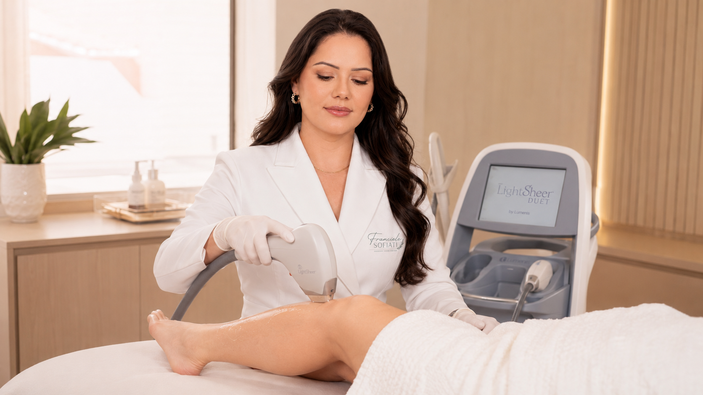

JOURNAL Laser e depilação
Depilação a laser: como pele, pelo e aparelho influenciam a avaliação
Cor e espessura do pelo, tom de pele, área e tipo de laser influenciam a resposta. Saiba o que conversar antes de decidir.

01 · Cor, espessura e ciclo do pelo
 01 · Cor, espessura e ciclo do pelo
01 · Cor, espessura e ciclo do peloO alvo e as características do pelo
A depilação a laser depende da interação entre a luz e estruturas pigmentadas do pelo. Cor e espessura do fio, região do corpo e fase de crescimento influenciam a resposta. Como os pelos não estão todos na mesma fase ao mesmo tempo, sessões podem ser distribuídas no tempo; o número exato não deve ser prometido antes de avaliar a pessoa e acompanhar a resposta.
02 · Tom de pele e tecnologia precisam ser considerados juntos
Pele e aparelho também entram na avaliação
O tom da pele é relevante porque a energia também interage com pigmento cutâneo. Isso não permite concluir pela aparência ou por uma tabela simples se alguém pode ou não realizar o procedimento. A AAD observa que diferentes tons de pele podem ser considerados, com cuidado adequado, e que cor e espessura do pelo, área e tipo de laser influenciam os resultados. Experiência de quem opera e o aparelho realmente utilizado também importam.
03 · Respostas individuais variam
Variação não significa falta de critério
“Laser para todos” e “não funciona em pele escura” são generalizações. A tecnologia e os cuidados evoluíram, mas tratamentos a laser podem causar queimaduras, alterações de pigmentação ou cicatrizes se forem inadequados. Uma avaliação individual deve considerar bronzeamento recente, histórico de manchas e cicatrização, medicamentos, sensibilidade e objetivo. Conte essas informações; não altere medicamentos por conta própria.
04 · Perguntas para levar à consulta
Perguntas para uma decisão informada
Pergunte qual aparelho e tipo de laser serão usados, como a equipe avalia seu tom de pele e pelo, que resultados são razoáveis para o seu caso, quantas sessões podem ser consideradas antes de reavaliar, quais riscos devem ser discutidos e que preparo será indicado. O guia de preparo para depilação a laser aprofunda a conversa prévia; a página do serviço LightSheer Duet descreve a opção oferecida pela clínica.
05 · Referências
Referências
As fontes abaixo ajudam a entender os termos e preparar perguntas. Elas não confirmam o modo disponível na clínica nem substituem avaliação individual.
Contato
Pergunte sobre este tema ou outra preocupação
Envie sua dúvida com as informações que você se sente confortável em compartilhar. A resposta será enviada pelos dados informados.
Próximo passo